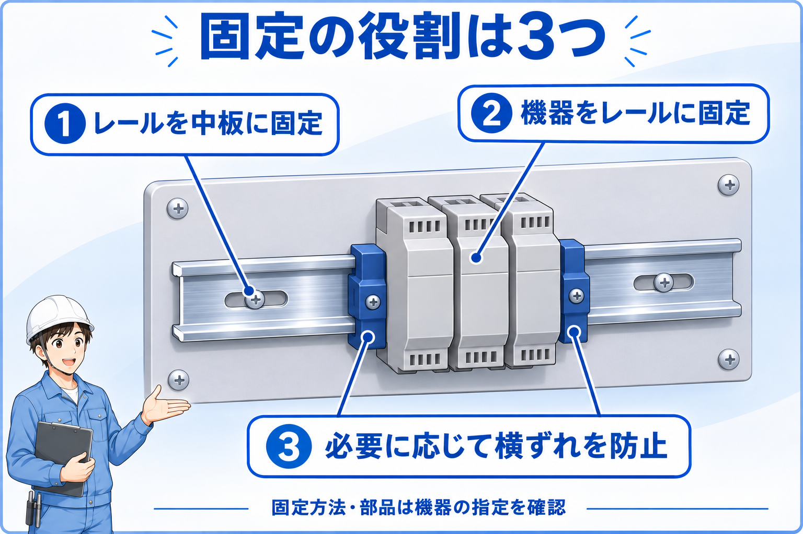
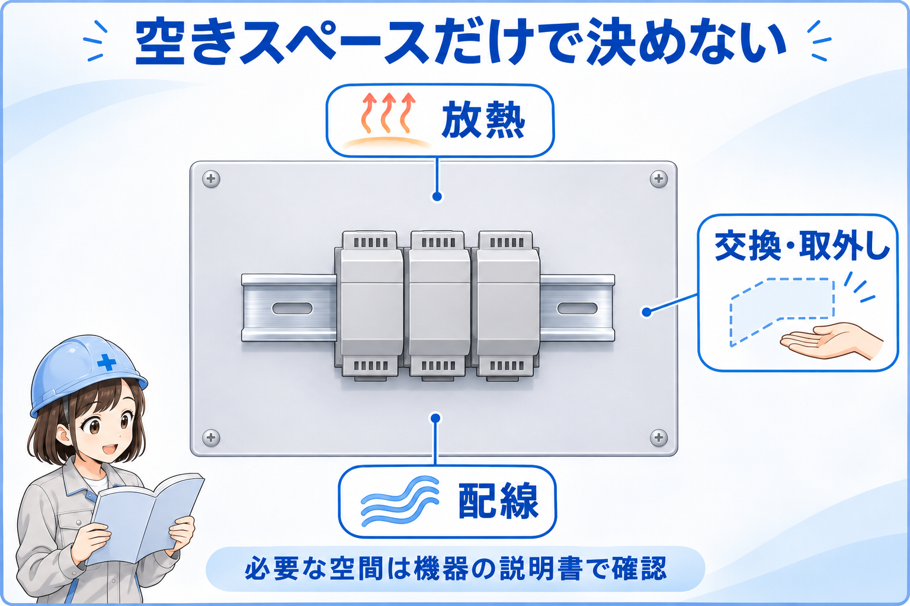

DINレールとは
DINレールは、端子台、リレーソケット、PLC、電源などの対応機器を固定するための金属製レールです。制御盤の中板などにレールを固定し、その上へ機器を取り付けます。
機器ごとに中板へ取付穴を設ける方式に比べ、レールに沿って位置をそろえやすく、対応機器の交換や追加をしやすいのが特徴です。ただし、同じ種類の機器でもDINレール非対応の製品があります。
まずはこう覚える
DINレールの基本的な役割は、機器を支えることです。通常の信号・電源配線が、レールへ並べるだけでつながるわけではありません。

先輩まずは「レールを盤に固定する」と「機器をレールに固定する」を分けて見ると、仕組みが分かりやすいよ。

後輩銀色のレールだけでなく、機器側の取付部分も見るんですね。
固定する役割を3つに分ける

1. レール → 中板
レールを取付面へ固定します。取付穴、固定間隔、ねじなどはレール・機器側の条件を確認します。
2. 機器 → レール
機器やソケットのフック・ロック部でレールをつかみます。装着方法も解除方法も機種により異なります。
3. 横ずれを防ぐ
必要に応じ、指定された止め金具を機器群の端などに取り付けます。機器のロックと同じ役割ではありません。
止め金具はメーカーによって「エンドプレート」「エンドクランプ」などと呼ばれます。名称だけでなく用途と対応型式を確認し、端子台の絶縁用端面板など、別の役割の部品と取り違えないでください。
DINレールに取り付ける代表的な機器
次はDINレール取付に対応した製品の例です。機器の種類だけで取付可否を判断せず、型式ごとの取付説明を確認します。
| 機器 | 主な役割 | 取付時に見る点 |
|---|---|---|
| 端子台 | 配線の接続・中継 | 対応レール、必要な端面板・止め金具 |
| リレー／ソケット | 信号や回路の切替 | ソケット側の取付対応、リレーの保持方法 |
| PLC／I/Oユニット | 入力の読取りと出力の制御 | 取付姿勢、連結方法、固定用金具 |
| スイッチング電源 | 制御用の電源を供給 | 放熱方向、周囲との離隔、取付方式 |
| 小型保護機器 | 対応する回路の保護 | レール取付対応と必要なアダプタ |
同じレール上でも、同じ回路とは限らない
機器の並びだけでは電源系統や信号の接続関係は分かりません。配線番号や端子番号を図面と照合して読みます。
35mmの意味と、幅だけでは決まらない適合性
制御盤では、幅35mmのトップハット形レールが代表的です。ただし、35mmは寸法の一つを表すだけで、すべてのDINレール対応機器を無条件に取り付けられるという意味ではありません。
レールの形状・寸法
機器が指定する断面形状、幅、高さ、板厚を確認します。同じ幅でも高さや断面が異なる製品があります。
機器の取付条件
対応レールの型式、取付姿勢、取付アダプタや止め金具の要否を確認します。
材質と使用条件
材質、支持条件、使用環境も確認します。見た目が似ているレールを同等品と決めつけません。
選定では、まず取り付ける機器の説明書を開き、指定されたレールと関連部品を照合します。レールの幅だけを測って判断するより確実です。
DINレール取付と直付けの違い
直付けは、機器を中板などへ直接ねじ止めする方法です。DINレール取付が常に優れているわけではなく、機器の指定や重量、支持条件、配置に合わせて選びます。
| 項目 | DINレール取付 | 直付け |
|---|---|---|
| 固定する場所 | レールに対応する取付部 | 機器の取付穴や専用ベース |
| 配置 | レールに沿ってそろえやすい | 機器ごとに取付位置を決める |
| 交換・増設 | 対応と周囲の余裕があれば行いやすい | ねじや取付穴へのアクセスが必要 |
| 判断の基準 | 機器の指定方式、支持条件、配線・放熱・保守スペースを満たすこと | |
DINレールから外せても、配線や周辺部品が邪魔で交換できない場合があります。「外せる構造」と「作業しやすい配置」は分けて考えます。
取り付け・取り外しは機器の指定方法で行う
作業前に安全を確保する
取付・取外し・固定確認を行う前に、設備の手順に従って電源を遮断し、再投入防止や残留電荷への対応など必要な安全措置を取ります。通電中の盤内で機器を押したり、工具を差し込んだりしないでください。
フックをレールに掛けてロックする機器もあれば、先に固定用フックを引き出してから装着する機器もあります。「上を掛けて下を押す」「下側をドライバーでこじる」を全機種共通の手順にしないことが大切です。
1. 適合と方法を確認
機器型式、対応レール、装着・解除の操作方法を説明書で確認します。
2. 指定の方法で装着
レールを適切に固定したうえで、機器の指定方法に従って装着します。
3. ロックと金具を確認
浮きや傾き、ロック状態、必要な止め金具を確認します。配線を引いて固定確認しません。
4. 外す前にも確認
配線や隣接部品への負担を避け、指定された解除部を操作します。外れないときは無理に引きません。
たとえばメーカーの製品取付説明には、固定用フックの操作や両端の止め金具が具体的に指定されています。実際の作業では、この記事の概略ではなく対象製品の説明書を優先してください。
空きスペースだけでなく、放熱・配線・交換を見る

レールに空きがあるだけでは、機器を増設できるとは限りません。メーカー資料で指定される周囲との距離や取付方向に加え、端子・コネクタにアクセスできるか、交換時にロックを操作できるかも確認します。
放熱
電源やPLCなどの指定離隔・取付姿勢を守り、放熱を妨げない配置にします。
配線
配線ダクトとの距離、ケーブルの曲げ、端子への工具の入り方を確認します。
交換・取外し
解除部の操作やコネクタの着脱ができる余裕を残します。隣の機器の作業も考えます。
後輩空いた所に入ればよい、というわけではないんですね。
先輩そう。付けた後に熱を逃がせて、配線できて、交換できるところまで考えよう。
まとめ：DINレールは機器を支える取付の土台
- DINレールは、対応機器を並べて固定する金属製レールです。
- レールの固定、機器のロック、必要な横ずれ防止金具を分けて確認します。
- 35mmという幅だけでなく、形状・寸法・材質と機器の指定条件を照合します。
- 交換や増設では、放熱・配線・解除操作のための空間も確認します。
まずレールの役割を理解し、実際の取付条件は機器の説明書へ戻って確認する。この順番なら、機器が変わっても判断しやすくなります。
メーカー公式資料・技術参照元
公式資料確認日：2026年11月12日。機種固有の寸法、取付姿勢、操作方法、離隔や接地の条件は、使用する型式に対応する最新資料を確認してください。
- オムロン：支持レール／エンドプレート／スペーサ：レールと関連部品の区別。
- フエニックス・コンタクト：取付部品：エンドクランプ等の取付用部品。
- オムロン：E5DC／E5DC-B 使用上の注意：製品ごとの取付条件、エンドプレート指定の例。
- オムロン：PLCの共通の注意事項：設置環境、配線・保守・増設を考えた配置。
本記事は仕組みを理解するための基礎解説です。実設備の作業手順書や、個別機器の取扱説明書に代わるものではありません。